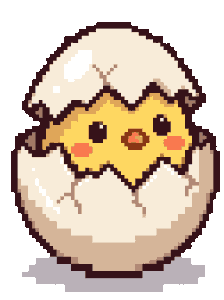
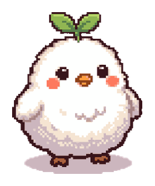
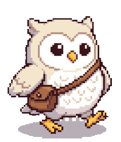
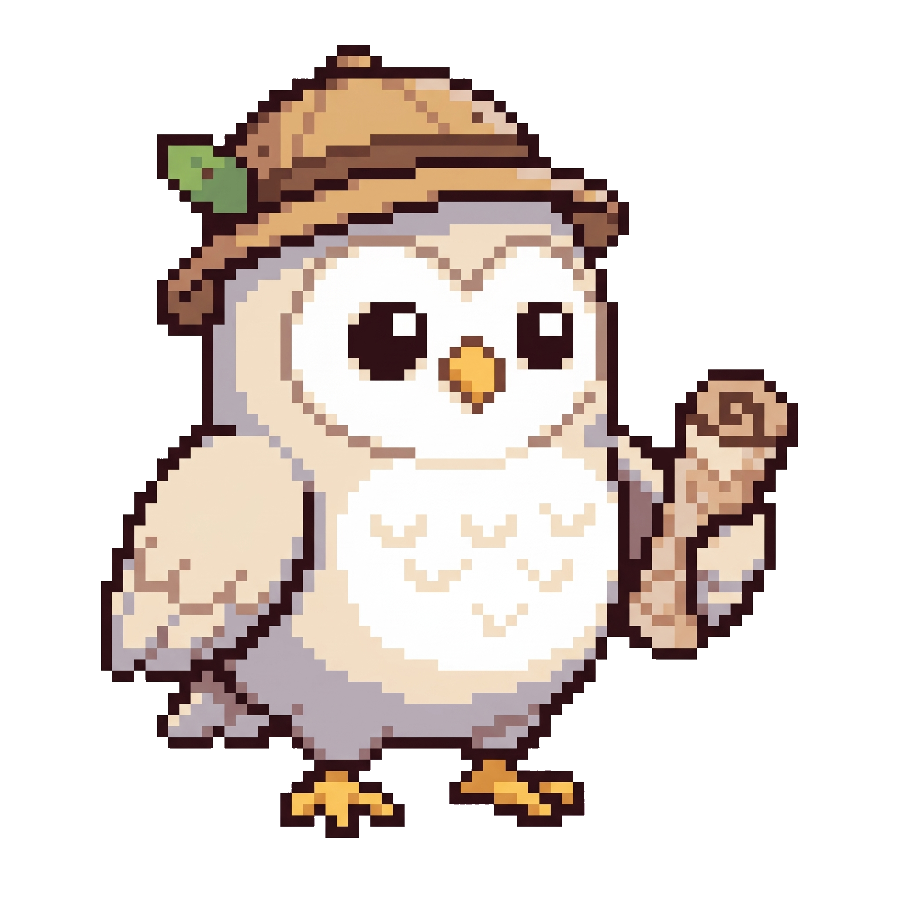
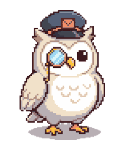
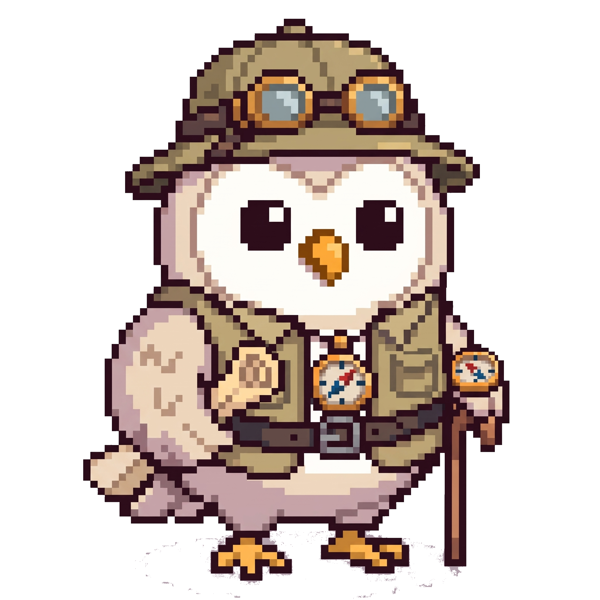
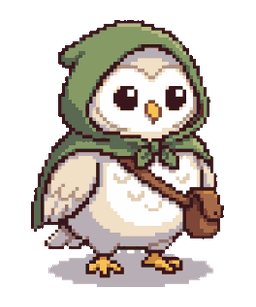
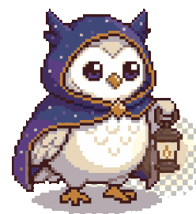
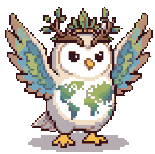
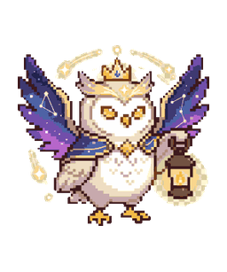

「知識で道を照らす＝ミチシル」の象徴
レベルアップ機能導入の目的
なぜこのレベルアップをするのか
ユーザーが散歩実績（距離・時間・スポット発見/評価など）を蓄積するにつれ、相棒キャラクター「ミチシル」は以下の10段階で進化していきます。
| レベル / 称号 | ストーリー・設定（なぜ成長するのか） | ビジュアルデザインの解説 |
|---|---|---|
|
Lv.1
ミチのタマゴ  |
未知の可能性を秘めて生まれたばかりの状態。まだ外の世界や散歩の魅力を知らず、殻に守られながら最初の一歩を待っている段階。 | 割れた卵の殻の中にすっぽりと収まった、黄色く愛らしいヒナの姿。つぶらな瞳でこれから始まる旅の世界を見つめている。 |
|
Lv.2
よちよちヒナ  |
ユーザーと共に外へと踏み出し、歩く楽しさの片鱗を体感し始めた段階。まだ足取りはおぼつかないが、好奇心に満ちている。 | 殻から抜け出し、白くて丸みのあるふわふわの産毛に包まれたヒナの姿。頭部には淡い黄色の毛が残り、ほんのり赤らんだ頬が愛らしい。 |
|
Lv.3
おさんぽビギナー  |
近所を散策し、道や景色を眺める楽しさを覚えた段階。フクロウらしい羽が生え揃い、自分でお出かけする準備が整った。 | フクロウらしい白い羽と茶色の背羽が生え揃った姿。肩から小さな茶色の革製ポシェットを斜め掛けし、軽やかにお散歩を始めている。 |
|
Lv.4
みならいガイド  |
散歩の習慣が身につき、周囲のスポットやルートを記録し始めた段階。案内人としての基本知識を学び始めている。 | 葉っぱ飾りがワンポイントの茶色い探検帽をかぶり、左手には丸めた地図（巻物）をしっかりと握りしめた見習いスタイルの姿。 |
|
Lv.5
まちの案内人  |
街中の抜け道やおすすめスポットを把握し、自信を持って周囲を案内できるようになった一人前のローカルガイド。 | 緑色の案内人ハットをかぶり、肩から提げたポシェットには方位磁針（コンパス）を装着。街歩きのエキスパートとしての落ち着きが出ている。 |
|
Lv.6
さすらいの旅人  |
馴染みの街を飛び出し、未知のエリアや長い道のりへも果敢に挑戦するフィールドワーカーへと成長した段階。 | ゴーグル付きのアウトドアハットをかぶり、ポケット付きの探検ベストを着用。左手には歩行を支える木製ステッキ、胸元と腕には方位磁針を備えた本格装備。 |
|
Lv.7
みちしるべの使者  |
数々の長旅とスポット開拓を成し遂げ、迷える人々を正しい道へと導く風格と経験を備えた頼もしい使者。 | 青い羽根飾りがついたテンガロンハットに深紅のケープマントを羽織り、脇には多数の地図巻物を抱え、ステッキを手にした歴戦の旅人の姿。 |
|
Lv.8
導きの王  |
圧倒的な歩みとスポット開拓によって広大なエリアを網羅し、すべての道を統べる存在として認められた王。 | 頭上には黄金の王冠を戴き、金縁のワインレッドマントを羽織る。右手には中央にコンパスが埋め込まれた黄金の王笏（ステッキ）を持ち、周囲に光の粒子が舞う。 |
|
Lv.9
導きの覇王  |
あらゆる道・街・歴史の真理を極め、王を超えた威厳と絶対的な案内力で人々を先導する最高位の統率者。 | 宝石が輝く立派な大王冠を戴き、白ファー付きの真紅のロイヤルマントを着用。目元には黄金の光冠が輝き、コンパスの王笏を構えた威風堂々たる覇王の姿。 |
|
Lv.10
極・ミチシル  |
ユーザーと共に歩んだ無数の軌跡そのものが光となり、すべての旅路と未来を永遠に照らし続ける至高・神話の存在。 | 星座と夜空が煌めく壮麗な宇宙の翼を広げ、頭上には光の輪（エンジェルリング）と王冠。両目は黄金に輝き、左手には未知の暗闇を明るく照らすランタンを掲げた神秘的な姿。 |